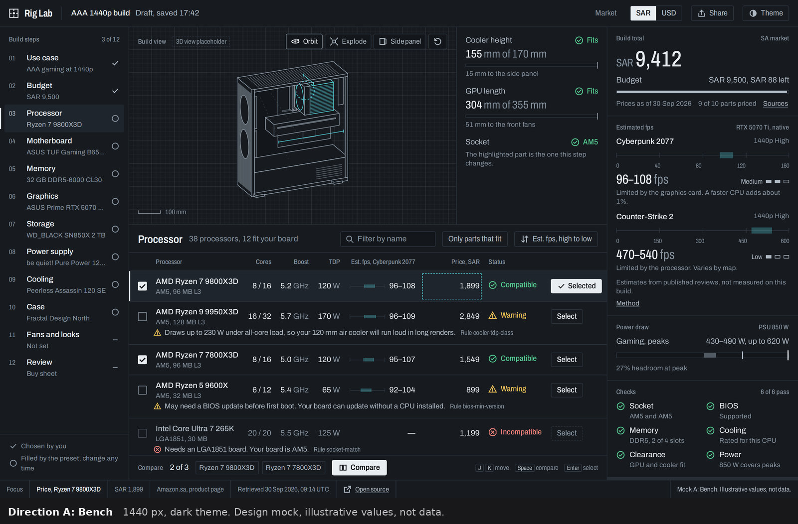
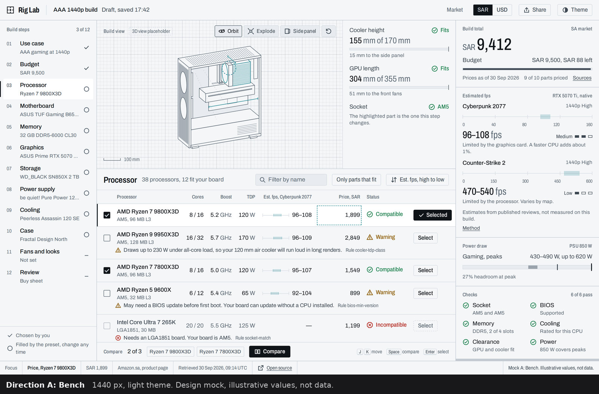
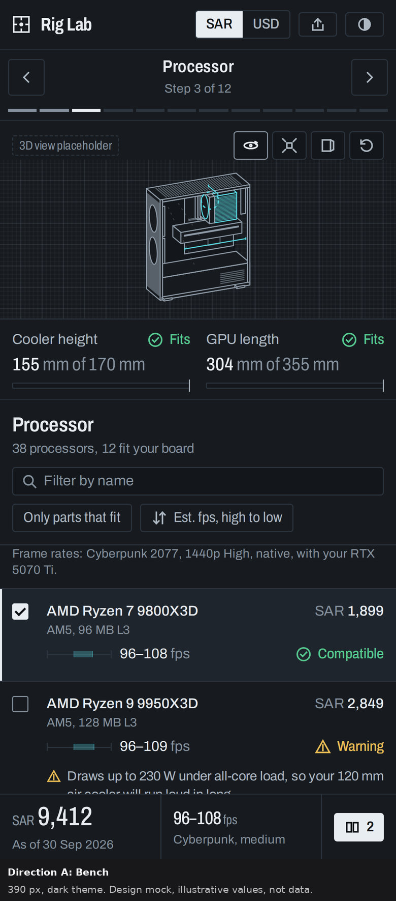
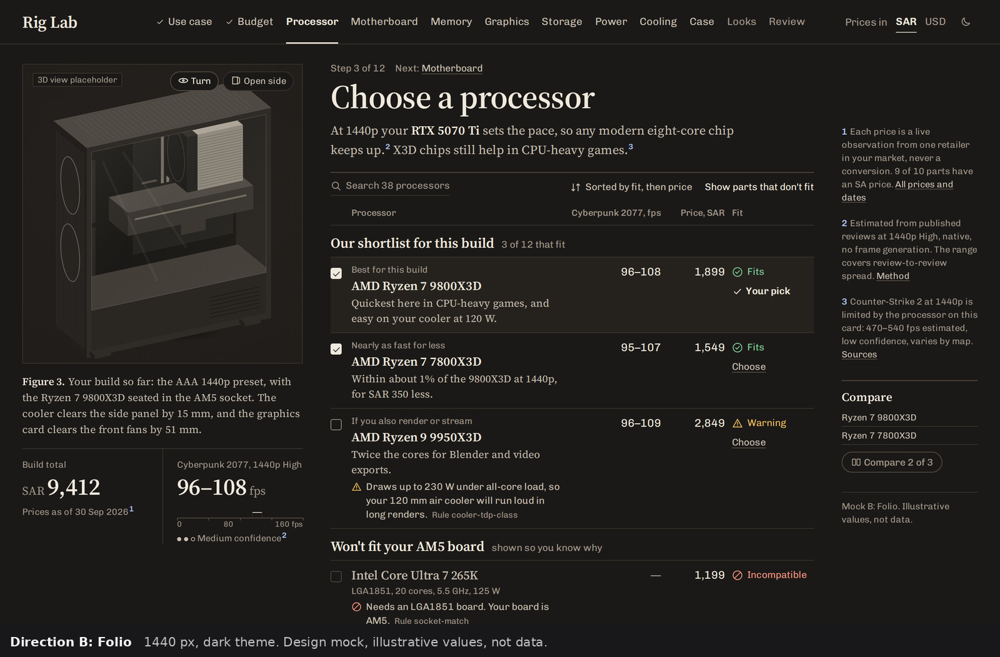
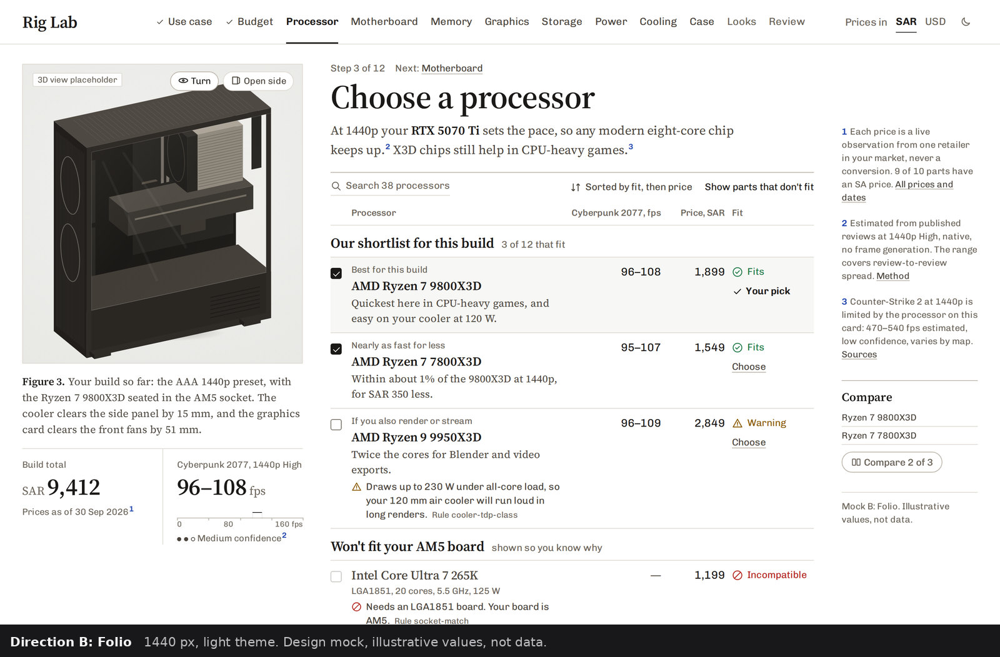
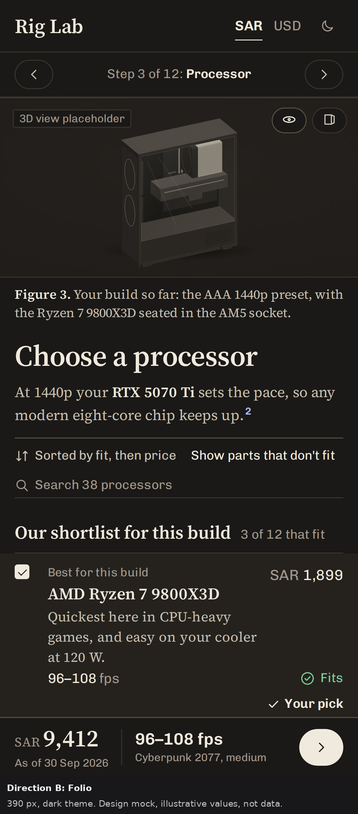
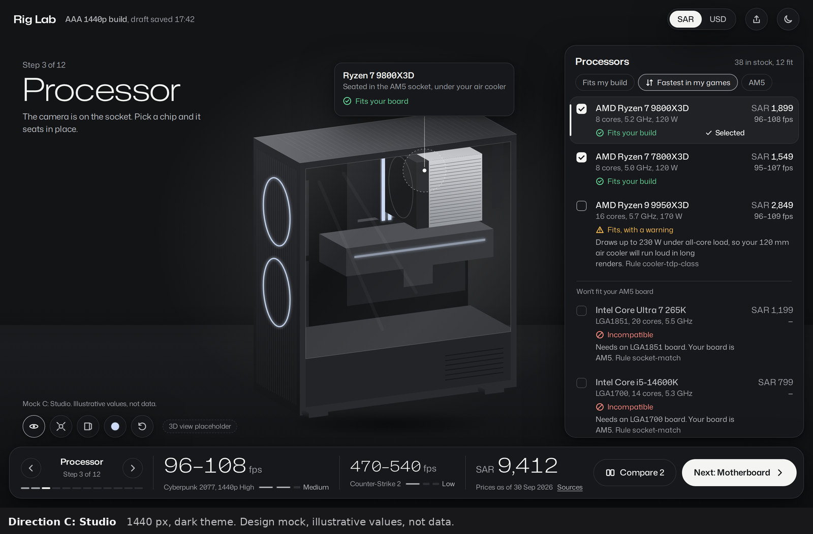
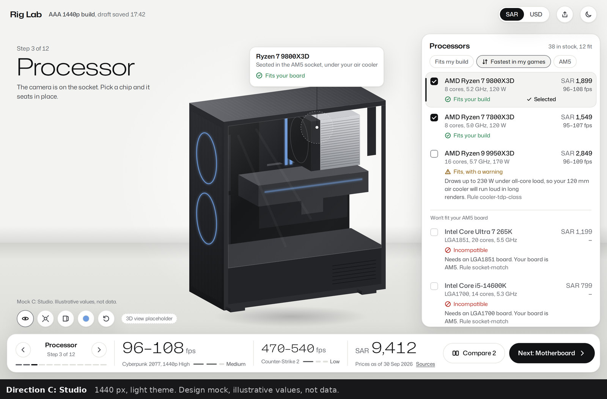
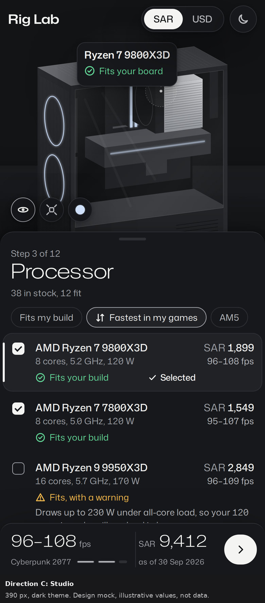

Rig Lab: three directions for the builder
The same CPU step drawn three ways, with the same parts and the same illustrative numbers. Each column shows 1440 px dark, 1440 px light and 390 px dark. Design mocks with illustrative values, not data.
Direction A
Bench

1440 px, dark

1440 px, light

390 px, dark
Direction B
Folio

1440 px, dark

1440 px, light

390 px, dark
Direction C
Studio

1440 px, dark

1440 px, light

390 px, dark
WP-DS0, 30 Sep 2026. Mocks: docs/design/mocks/<slug>/index.html. Full specification: docs/design/direction.md.